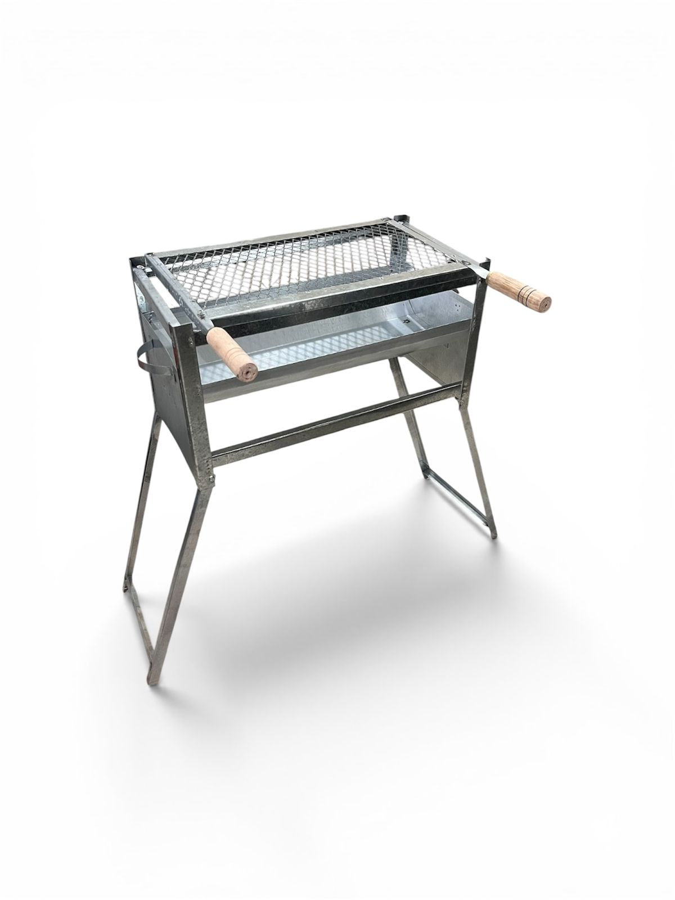
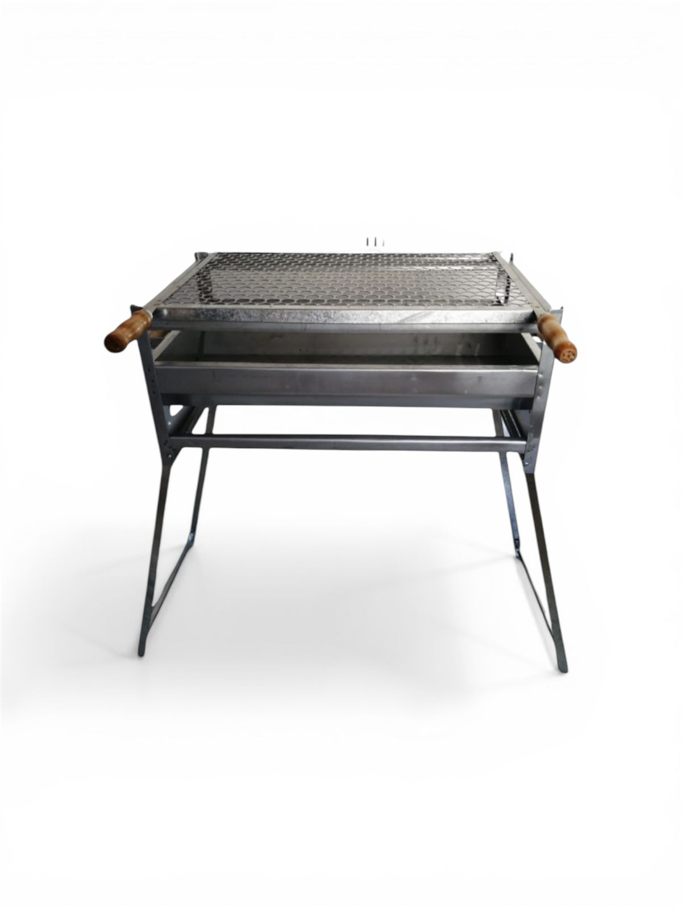
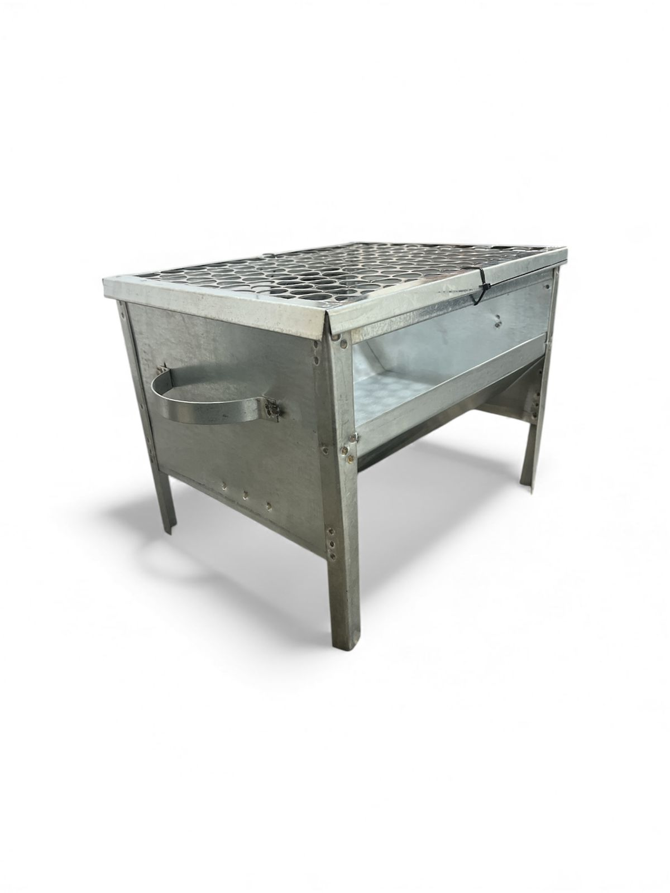

Churrasqueira Galvanizada Dobrável (55 e 65cm)
Prática e resistente, com pés dobráveis e grelha. Ideal para transportar e usar em qualquer lugar.
Fabricação e venda de churrasqueiras em aço inox e galvanizado com preço justo e entrega rápida.



Prática e resistente, com pés dobráveis e grelha. Ideal para transportar e usar em qualquer lugar.
Máxima durabilidade, excelente acabamento e facilidade de limpeza. Resiste ao tempo e ao calor alto.
Compacta e leve. Perfeita para varandas, acampamentos, praia ou espaços reduzidos.
Desenvolvemos churrasqueiras em inox ou galvanizado nas medidas exatas da sua necessidade.
Grelhas moeda, suportes e acessórios em inox e galvanizado com encaixe sob medida.
Sem intermediários: você compra direto de quem fabrica com o melhor custo-benefício.
A Farida é fábrica de churrasqueiras em aço Inox e Galvanizado sediada em Santo André. Fabricamos modelos portáteis, práticos e sob medida direto para você, sem atravessadores, garantindo qualidade do material e preço justo.
Segunda a sexta, das 08:00 às 17:00
Chama no WhatsApp agora e escolha o modelo ideal em Inox ou Galvanizado. A gente responde direto.